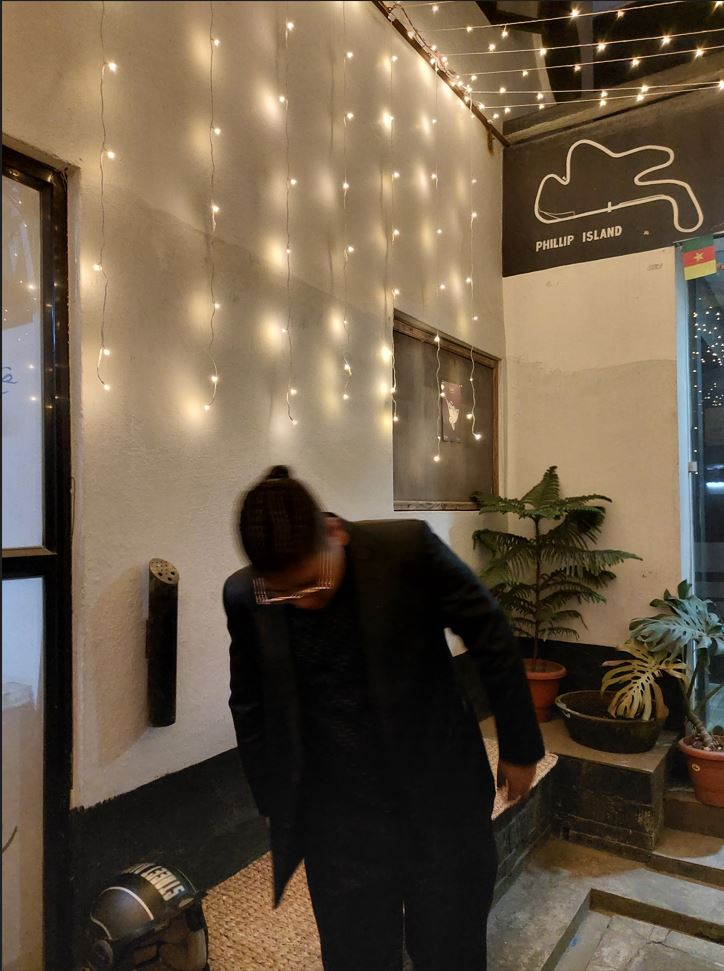

Incline CSS
Web technologies Week 4 workshop taskInternal CSS

The game-changing animation system, which brought enhanced player personality and movement fidelity to EA SPORTS FIFA, is back with increased coverage of the entire pitch. Enhanced animations for tactical shielding, impact balancing, and physical jostling take realistic player movement, responsiveness, and personality to unbelievable heights. FIFA 19 celebrates the world's most popular game, and lets fans get a taste of what it's like to play on the pitch. There isn't any controversial content in this game, but gamers who play online can talk with other people, potentially being exposed to inappropriate comments. There are in-game purchases using real money for team purchases and athletes, and there are also lots of advertisements in stadiums amd on players. Logos include Jeep, Nike, Emirates, and more.
External CSS
